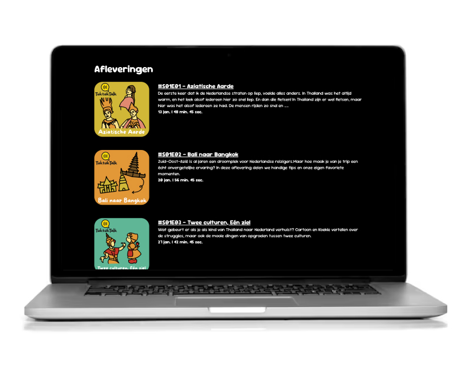
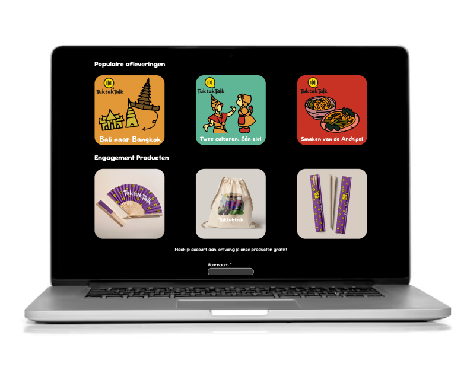

TuktukTalk – Coded Podcast Website
Website Development (HTML & CSS)
View live site ↗About this project
For this Internetstandaarden course, I translated our Figma prototype of the TuktukTalk podcast website into a fully coded and responsive web page. The assignment focused on writing clean, semantic HTML and styling the layout using modern CSS techniques.
My goal was to match the original prototype as closely as possible while following accessibility guidelines and ensuring a strong foundation in web standards.
This was also the first project where I experimented with implementing light and dark mode. I learned how to work with CSS variables, prefers-color-scheme, and theme-adaptive UI design. It was my very first time, and it helped me understand how to make interfaces more user-friendly and flexible.
Through this assignment, I strengthened my skills in semantic structure, responsive layouts, and translating a static design into a functional, well-structured website.
Preview

